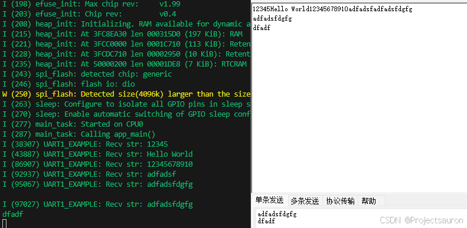
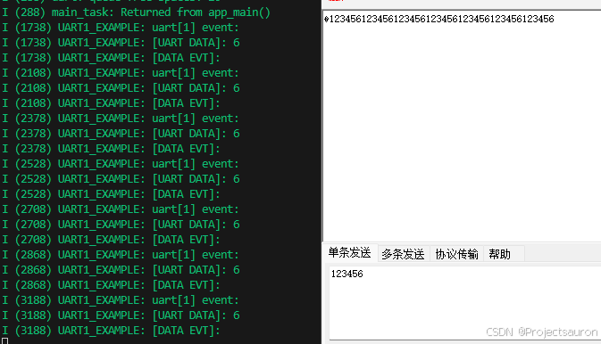
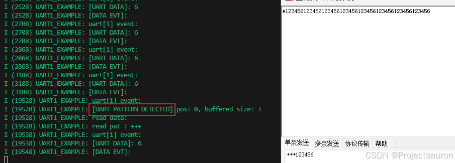
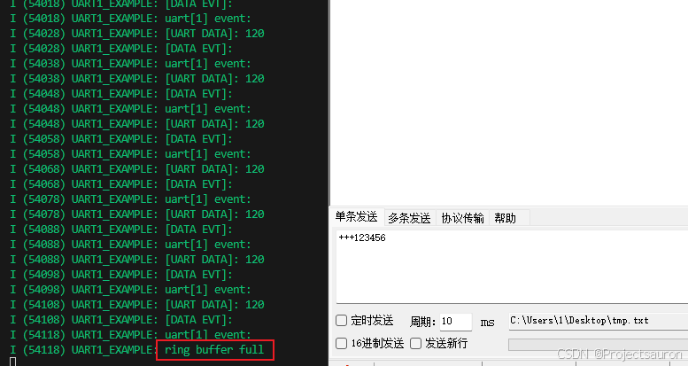

ESP32-IDF USART 专题
@toc
第一节主要介绍 ESP32-IDF 相关 API，在第二节介绍如何在 ESP32 上使用 USART，第三节为实例演示。
一、基本介绍
API 参考路径
esp-idf/components/esp_driver_uart/include/driver/uart.h。
1、配置结构体
1.1 uart_config_t
1 | typedef struct { |
该结构体用于 USART 初始化设置。
baud_rate：设置波特率data_bits：数据位长度parity：设置校验位模式stop_bits：设置停止位长度flow_ctrl：硬件流控制rx_flow_ctrl_thresh：设置 UART 硬件流控制（RTS/CTS）的阈值。当接收到的数据达到这个阈值时，UART 硬件会自动发送 RTS 信号，请求发送方暂停发送数据，直到接收到的数据被处理完毕。这样可以避免数据溢出，提高数据传输的稳定性。source_clk：时钟源，见下：
1 | typedef enum { |
1.2 uart_intr_config_t
1 | typedef struct { |
该结构体用于 USART 中断配置。
intr_enable_mask：中断使能掩码，通过位运算（如按位或）可以连接多个 UART 中断使能标志，例如，对应于UART_TX、UART_RX、UART_ERROR等不同的中断类型。rx_timeout_thresh：接收超时阈值，单位为发送一个字节的时间。当在此阈值内没有接收到新数据时，将触发超时中断，用于处理接收操作的超时情况。txfifo_empty_intr_thresh：发送 FIFO 空中断阈值，指定了 UART 发送 FIFO 缓冲区为空时触发的中断阈值。当 FIFO 中的数据量低于此阈值时，将触发与发送操作相关的中断，可以用于确认数据是否成功发送。rxfifo_full_thresh：接收 FIFO 满中断阈值，在 FIFO 满的情况下，如果再次接收到数据，将触发接收满中断，用于处理接收数据缓冲区可能溢出的情况。
1.3 uart_event_t
1 | typedef struct { |
该结构体用于表示 UART 事件的相关信息。
type：事件类型size：存放UART_DATA事件的有效数据大小timeout_flag：指示 UART 数据读取是否超时。当接收过程中没有在配置的接收超时时间内接收到新的数据时，这个标志会被设置为 true。如果事件是由 FIFO满中断引起的，则在接下来的字节到达之前不会有带超时标志的事件。
2、常用 API
2.1 驱动相关
2.1.1 uart_driver_install
1 | esp_err_t uart_driver_install(uart_port_t uart_num, int rx_buffer_size, int tx_buffer_size, int queue_size, |
- 参数
uart_num：UART 端口号，最大为UART_NUM_MAX - 1rx_buffer_size：UART 接收环形缓冲区大小tx_buffer_size：UART 发送环形缓冲区大小。如果设置为零，驱动程序将不使用 TX 缓冲区，TX 函数将阻塞任务直到所有数据都被发送出去。queue_size：UART 事件队列大小uart_queue：UART 事件队列句柄（输出参数）。成功后，此处将写入新的队列句柄以提供访问 UART 事件的权限。如果设置为 NULL，则驱动程序将不使用事件队列。intr_alloc_flags：分配中断时使用的标志。一个或多个（按位或运算）ESP_INTR_FLAG_*值(见esp_intr_alloc.h)。
- 作用
- 安装 UART 驱动并设置 UART 为默认配置。UART ISR 处理器将被附加到与该函数正在运行的相同 CPU 内核上。
- 返回值
ESP_OK成功ESP_FAIL参数错误
2.1.2 uart_driver_delete
1 | esp_err_t uart_driver_delete(uart_port_t uart_num) |
- 参数
uart_num：UART 端口号，最大为UART_NUM_MAX - 1
- 作用
- 卸载 UART 驱动。
- 返回值
ESP_OK成功ESP_FAIL参数错误
2.1.3 uart_is_driver_installed
1 | bool uart_is_driver_installed(uart_port_t uart_num) |
- 参数
uart_num：UART 端口号，最大为UART_NUM_MAX - 1
- 作用
- 检查是否已安装驱动程序。
- 返回值
- true：驱动程序已安装
- false：驱动程序未安装
2.2 中断相关
2.2.1 uart_clear_intr_status
1 | esp_err_t uart_clear_intr_status(uart_port_t uart_num, uint32_t clr_mask) |
- 参数
uart_num：UART 端口号，最大为UART_NUM_MAX - 1clr_mask：中断状态要清除的位掩码。
- 作用
- 清除 UART 中断标志位。
- 返回值
ESP_OK成功ESP_FAIL参数错误
2.2.2 uart_enable_intr_mask
1 | esp_err_t uart_enable_intr_mask(uart_port_t uart_num, uint32_t enable_mask) |
- 参数
uart_num：UART 端口号，最大为UART_NUM_MAX - 1enable_mask：启动位的位掩码。
- 作用
- 设置 UART 中断标志位。
- 返回值
ESP_OK成功ESP_FAIL参数错误
同理，禁用为：
esp_err_t uart_disable_intr_mask(uart_port_t uart_num, uint32_t disable_mask)
2.2.3 uart_enable_rx_intr
1 | esp_err_t uart_enable_rx_intr(uart_port_t uart_num) |
- 参数
uart_num：UART 端口号，最大为UART_NUM_MAX - 1
- 作用
- 使能 UART RX 中断（
RX_FULL、RX_TIMEOUT）。
- 使能 UART RX 中断（
- 返回值
ESP_OK成功ESP_FAIL参数错误
禁用为：
esp_err_t uart_disable_rx_intr(uart_port_t uart_num)
2.2.5 uart_enable_tx_intr
1 | esp_err_t uart_enable_tx_intr(uart_port_t uart_num, int enable, int thresh) |
- 参数
uart_num：UART 端口号，最大为UART_NUM_MAX - 1enable：1: 启用; 0: 禁用thresh：TX 中断的阈值（0 ~UART_HW_FIFO_LEN(uart_num)）
- 作用
- 使能 UART TX 中断（
TX_FULL、TX_TIMEOUT）。
- 使能 UART TX 中断（
- 返回值
ESP_OK成功ESP_FAIL参数错误
2.2.6 uart_intr_config
1 | esp_err_t uart_intr_config(uart_port_t uart_num, const uart_intr_config_t *intr_conf) |
- 参数
uart_num：UART 端口号，最大为UART_NUM_MAX - 1intr_conf：UART 中断配置
- 作用
- 配置 UART TX 中断。
- 返回值
ESP_OK成功ESP_FAIL参数错误
2.3 参数设置
2.3.1 uart_set_word_length
1 | esp_err_t uart_set_word_length(uart_port_t uart_num, uart_word_length_t data_bit) |
- 参数
uart_num：UART 端口号，最大为UART_NUM_MAX - 1data_bit：数据位长度
- 作用
- 设置 UART 数据位长度。
- 返回值
ESP_OK成功ESP_FAIL参数错误
读取使用函数：
esp_err_t uart_get_word_length(uart_port_t uart_num, uart_word_length_t *data_bit)
2.3.2 uart_set_stop_bits
1 | esp_err_t uart_set_stop_bits(uart_port_t uart_num, uart_stop_bits_t stop_bits) |
- 参数
uart_num：UART 端口号，最大为UART_NUM_MAX - 1stop_bits：停止位长度
- 作用
- 设置 UART 停止位长度。
- 返回值
ESP_OK成功ESP_FAIL参数错误
读取使用函数：
esp_err_t uart_get_stop_bits(uart_port_t uart_num, uart_stop_bits_t* stop_bits)
2.3.3 uart_set_parity
1 | esp_err_t uart_set_parity(uart_port_t uart_num, uart_parity_t parity_mode) |
- 参数
uart_num：UART 端口号，最大为UART_NUM_MAX - 1parity_mode：奇偶校验模式
- 作用
- 设置 UART 奇偶校验模式。
- 返回值
ESP_OK成功ESP_FAIL参数错误
读取使用函数：
esp_err_t uart_get_parity, uart_port_t uart_num, uart_parity_t* parity_mode
2.3.4 uart_set_baudrate
1 | esp_err_t uart_set_baudrate(uart_port_t uart_num, uint32_t baudrate) |
- 参数
uart_num：UART 端口号，最大为UART_NUM_MAX - 1baudrate：波特率
- 作用
- 设置 UART 波特率。
- 返回值
ESP_OK成功ESP_FAIL参数错误
读取使用函数：
esp_err_t uart_get_baudrate(uart_port_t uart_num, uint32_t *baudrate)
2.3.5 uart_set_pin
1 | esp_err_t uart_set_pin(uart_port_t uart_num, int tx_io_num, int rx_io_num, int rts_io_num, int cts_io_num) |
- 参数
uart_num：UART 端口号，最大为UART_NUM_MAX - 1tx_io_num：tx 引脚号rx_io_num：rx 引脚号rts_io_num：rts 引脚号cts_io_num：cts 引脚号
- 作用
- 将 UART 外设的信号分配给 GPIO 引脚。
- 返回值
ESP_OK成功ESP_FAIL参数错误
内部信号可以输出到多个 GPIO 引脚。只能有一个 GPIO 引脚连接输入信号。
2.3.6 uart_set_mode
1 | esp_err_t uart_set_mode(uart_port_t uart_num, uart_mode_t mode) |
- 参数
uart_num：UART 端口号，最大为UART_NUM_MAX - 1mode：UART 要设置的模式
- 作用
- 设置 UART 通信模式。
- 返回值
ESP_OK成功ESP_FAIL参数错误
2.3.7 uart_param_config
1 | esp_err_t uart_param_config(uart_port_t uart_num, const uart_config_t *uart_config) |
- 参数
uart_num：UART 端口号，最大为UART_NUM_MAX - 1uart_config：UART 配置参数
- 作用
- 设置 UART 配置参数。
- 返回值
ESP_OK成功ESP_FAIL参数错误
2.4 通信
2.4.1 uart_wait_tx_done
1 | esp_err_t uart_wait_tx_done(uart_port_t uart_num, TickType_t ticks_to_wait) |
- 参数
uart_num：UART 端口号，最大为UART_NUM_MAX - 1ticks_to_wait：超时时间，以 RTOS 滴答为单位的计数
- 作用
- 等待 UART TX FIFO 为空
- 返回值
ESP_OK成功ESP_FAIL参数错误ESP_ERR_TIMEOUT超时
2.4.2 uart_tx_chars
1 | int uart_tx_chars(uart_port_t uart_num, const char *buffer, uint32_t len) |
- 参数
uart_num：UART 端口号，最大为UART_NUM_MAX - 1buffer：要发送的数据len：要发送的数据的长度
- 作用
- 从给定的缓冲区和长度将数据发送到 UART 端口。此函数不会在 TX FIFO 中等待足够的空间。它只会填充可用的 TX FIFO 并在 FIFO 满时返回。
- 返回值
- (-1) Parameter error
- OTHERS （>=0） 推送到 TX FIFO 的字节数
2.4.3 uart_write_bytes
1 | int uart_write_bytes(uart_port_t uart_num, const void *src, size_t size) |
- 参数
uart_num：UART 端口号，最大为UART_NUM_MAX - 1src：要发送的数据len：要发送的数据的长度
- 作用
- 从给定的缓冲区和长度将数据发送到 UART 端口。
- 返回值
- (-1) Parameter error
- OTHERS （>=0） 推送到 TX FIFO 的字节数
如果 UART 驱动程序的参数
tx_buffer_size设置为零：在所有数据都发送出去或至少推送到 TX FIFO 之前，此函数不会返回。否则，如果tx_buffer_size> 0，则此函数将在将所有数据复制到 tx ring buffer 后返回，然后 UART ISR 将逐渐将数据从 ring buffer 移动到 TX FIFO。
2.4.4 uart_write_bytes_with_break
1 | int uart_write_bytes_with_break(uart_port_t uart_num, const void *src, size_t size, int brk_len) |
- 参数
uart_num：UART 端口号，最大为UART_NUM_MAX - 1src：要发送的数据len：要发送的数据的长度brk_len：中断信号持续时间（单位：以当前波特率发送 1 位所需的时间）
- 作用
- 从给定的缓冲区和长度将数据发送到 UART 端口。
- 返回值
- (-1) Parameter error
- OTHERS （>=0） 推送到 TX FIFO 的字节数
如果 UART 驱动程序的参数
tx_buffer_size设置为零：在所有数据和中断信号都发出之前，此函数不会返回。所有数据都发出后，发送 break 信号。否则，如果tx_buffer_size> 0，则此函数将在将所有数据复制到 tx ring buffer 后返回，然后 UART ISR 将逐渐将数据从 ring buffer 移动到 TX FIFO。发送所有数据后，发送中断信号。
2.4.5 uart_read_bytes
1 | int uart_read_bytes(uart_port_t uart_num, void *buf, uint32_t length, TickType_t ticks_to_wait) |
- 参数
uart_num：UART 端口号，最大为UART_NUM_MAX - 1buf：指向缓冲区的指针length：数据长度ticks_to_wait：超时时间，以 RTOS 滴答为单位的计数
- 作用
- 从给定的缓冲区和长度读取数据到 UART 端口。
- 返回值
- (-1) Parameter error
- OTHERS （>=0） 推送到 TX FIFO 的字节数
2.4.6 uart_get_buffered_data_len
1 | esp_err_t uart_get_buffered_data_len(uart_port_t uart_num, size_t *size) |
- 参数
uart_num：UART 端口号，最大为UART_NUM_MAX - 1size：数据长度
- 作用
- UART 获取 RX 环形缓冲区缓存数据长度。
- 返回值
ESP_OK成功ESP_FAIL参数错误
2.4.7 uart_get_tx_buffer_free_size
1 | esp_err_t uart_get_tx_buffer_free_size(uart_port_t uart_num, size_t *size) |
- 参数
uart_num：UART 端口号，最大为UART_NUM_MAX - 1size：接受可用空间大小的size_t指针
- 作用
- UART 获取 TX 环形缓冲区可用空间大小。
- 返回值
ESP_OK成功ESP_FAIL参数错误
2.4.8 uart_flush
1 | esp_err_t uart_flush(uart_port_t uart_num) |
- 参数
uart_num：UART 端口号，最大为UART_NUM_MAX - 1
- 作用
uart_flush_input的别名。UART 环形缓冲器刷新。这将丢弃 UART RX 缓冲区中的所有数据。
- 返回值
ESP_OK成功ESP_FAIL参数错误
2.4.9 uart_flush_input
1 | esp_err_t uart_flush_input(uart_port_t uart_num) |
- 参数
uart_num：UART 端口号，最大为UART_NUM_MAX - 1
- 作用
- 清除 input buffer，丢弃 ring-buffer 中的所有数据。
- 返回值
ESP_OK成功ESP_FAIL参数错误
3、枚举定义
参考 esp-idf/components/hal/include/hal/uart_types.h：
3.1 uart_word_length_t
设置 USART 通信时数据位长度：
1 | typedef enum { |
3.2 uart_parity_t
USART 校验位设置：
1 | typedef enum { |
3.3 uart_stop_bits_t
USART 停止位设置：
1 | typedef enum { |
3.4 uart_hw_flowcontrol_t
表示 USART 硬件流控相关的设置：
1 | typedef enum { |
3.5 uart_event_type_t
用于 ringbuffer 的 USART 事件类型
1 | typedef enum { |
3.6 uart_mode_t
1 | typedef enum { |
4、宏定义
4.1 UART_PIN_NO_CHANGE
在调用 uart_set_pin 时，可以提供 UART_PIN_NO_CHANGE 来保持当前分配的引脚
1 |
4.2 UART_FIFO_LEN
UART 环形缓冲区长度
1 |
|
4.3 UART_HW_FIFO_LEN(uart_num)
UART 硬件流控环形缓冲区长度
1 |
4.4 UART_BITRATE_MAX
最大可配置波特率。
1 |
|
二、UART 配置
本节将介绍如何使用 UART 驱动程序的函数和数据类型在 ESP32 和其他 UART 设备之间建立通信。基本编程流程分为以下几个步骤：
- 设置通信参数
uart_param_config- 设置波特率、数据位、停止位等 - 设置通信管脚
uart_set_pin()- 分配连接设备的管脚 - 安装驱动程序
uart_driver_install()- 为 UART 驱动程序分配 ESP32 资源 - 运行 UART 通信
uart_write_bytes()、uart_read_bytes()- 发送/接收数据 - 使用中断
uart_enable_intr_mask()- 触发特定通信事件的中断 - 删除驱动程序
uart_driver_delete()- 如无需 UART 通信，则释放已分配的资源
其中，步骤 1 到 3 为配置阶段，步骤 4 为 UART 运行阶段，步骤 5 和 6 为可选步骤。
1、设置通信参数
调用函数 uart_param_config() 并向其传递 uart_config_t 结构体，uart_config_t 结构体应包含所有必要的参数。请参考以下示例。
1 | const uart_port_t uart_num = UART_NUM_2; |
或者调用下表中的专用函数，能够单独配置特定参数。如需重新配置某个参数，也可使用这些函数。
| 配置参数 | 函数 |
|---|---|
| 波特率 | uart_set_baudrate() |
| 传输位 | 调用 uart_set_word_length() 设置 uart_word_length_t |
| 奇偶控制 | 调用 uart_parity_t 设置 uart_set_parity() |
| 停止位 | 调用 uart_set_stop_bits() 设置 uart_stop_bits_t |
| 硬件流控模式 | 调用 uart_set_hw_flow_ctrl() 设置 uart_hw_flowcontrol_t |
| 通信模式 | 调用 uart_set_mode() 设置 uart_mode_t |
2、设置通信引脚
通信参数设置完成后，可以配置其他 UART 设备连接的 GPIO 管脚。调用函数 uart_set_pin()，指定配置 Tx、Rx、RTS 和 CTS 信号的 GPIO 管脚编号。如要为特定信号保留当前分配的管脚编号，可传递宏 UART_PIN_NO_CHANGE。
不使用的管脚都指定为宏
UART_PIN_NO_CHANGE。
1 | // Set UART pins(TX: IO4, RX: IO5, RTS: 无, CTS: 无) |
3、安装驱动程序
通信管脚设置完成后，调用 uart_driver_install() 安装驱动程序并指定以下参数：
- Tx 环形缓冲区的大小
- Rx 环形缓冲区的大小
- 事件队列句柄和大小
- 分配中断的标志
该函数将为 UART 驱动程序分配所需的内部资源。
1 | // Setup UART buffered IO with event queue |
此步骤完成后，可连接外部 UART 设备检查通信。
汇总如下：
1 | uart_config_t uart_config = { |
4、运行 UART 通信
串行通信由每个 UART 控制器的有限状态机 (FSM) 控制。
发送数据的过程分为以下步骤：
- 将数据写入 Tx FIFO 缓冲区
- FSM 序列化数据
- FSM 发送数据
接收数据的过程类似，只是步骤相反：
- FSM 处理且并行化传入的串行流
- FSM 将数据写入 Rx FIFO 缓冲区
- 从 Rx FIFO 缓冲区读取数据
因此，应用程序仅会通过 uart_write_bytes() 和 uart_read_bytes() 从特定缓冲区写入或读取数据，其余工作由 FSM 完成。
4.1 发送数据
发送数据准备好后，调用函数 uart_write_bytes()，并向其传递数据缓冲区的地址和数据长度。该函数会立即或在有足够可用空间时将数据复制到 Tx 环形缓冲区，随后退出。当 Tx FIFO 缓冲区中有可用空间时，中断服务例程 (ISR) 会在后台将数据从 Tx 环形缓冲区移动到 Tx FIFO 缓冲区。调用函数请参考以下代码。
1 | // Write data to UART. |
函数 uart_write_bytes_with_break() 与 uart_write_bytes() 类似，但在传输结束时会添加串行中断信号。“串行中断信号”意味着 Tx 线保持低电平的时间长于一个数据帧。
1 | // Write data to UART, end with a break signal. |
能够将数据写入 Tx FIFO 缓冲区的另一函数是 uart_tx_chars()。 与 uart_write_bytes() 不同，此函数在没有可用空间之前不会阻塞。相反，它将写入所有可以立即放入硬件 Tx FIFO 的数据，然后返回写入的字节数。
“配套”函数 uart_wait_tx_done() 用于监听 Tx FIFO 缓冲区的状态，并在缓冲区为空时返回。
1 | // Wait for packet to be sent |
4.2 接收数据
一旦 UART 接收了数据，并将其保存在 Rx FIFO 缓冲区中，就需要使用函数 uart_read_bytes() 检索数据。读取数据之前，调用 uart_get_buffered_data_len() 能够查看 Rx FIFO 缓冲区中可用的字节数。请参考以下示例。
1 | // Read data from UART. |
如果不再需要 Rx FIFO 缓冲区中的数据，可以调用 uart_flush() 清空缓冲区。
4.3 软件流控
如果硬件流控处于禁用状态，可使用函数 uart_set_rts() 和 uart_set_dtr() 分别手动设置 RTS 和 DTR 信号电平。
4.4 通信方式选择
UART 控制器支持多种通信模式，使用函数 uart_set_mode() 可以选择模式。选择特定模式后，UART 驱动程序将处理已连接 UART 设备的相应行为。例如，使用 RTS 线控制 RS485 驱动芯片，能够实现半双工 RS485 通信。
1 | // Setup UART in rs485 half duplex mode |
5、使用中断
根据特定的 UART 状态或检测到的错误，可以生成许多不同的中断。调用 uart_enable_intr_mask() 或 uart_disable_intr_mask() 能够分别启用或禁用特定中断。
调用 uart_driver_install() 函数可以安装驱动程序的内部中断处理程序，用以管理 Tx 和 Rx 环形缓冲区，并提供事件等高级 API 函数（见下文）。
API 提供了一种便利的方法来处理本文所讨论的特定中断，即用专用函数包装中断：
- 事件检测：
uart_event_type_t定义了多个事件，使用 FreeRTOS 队列功能能够将其报告给用户应用程序。调用安装驱动程序中的uart_driver_install()函数，可以启用此功能。 - 达到 FIFO 空间阈值或传输超时：Tx 和 Rx FIFO 缓冲区在填充特定数量的字符和在发送或接收数据超时的情况下将会触发中断。如要使用此类中断，请执行以下操作：
- 配置缓冲区长度和超时阈值：在结构体
uart_intr_config_t中输入相应阈值并调用uart_intr_config() - 启用中断：调用函数
uart_enable_tx_intr()和uart_enable_rx_intr() - 禁用中断：调用函数
uart_disable_tx_intr()或uart_disable_rx_intr()
- 配置缓冲区长度和超时阈值：在结构体
- 模式检测：在检测到重复接收/发送同一字符的“模式”时触发中断。例如，模式检测可用于检测命令字符串末尾是否存在特定数量的相同字符（“模式”）。可以调用以下函数：
- 配置并启用此中断：调用
uart_enable_pattern_det_baud_intr() - 禁用中断：调用
uart_disable_pattern_det_intr()
- 配置并启用此中断：调用
6、删除驱动程序
如不再需要与 uart_driver_install() 建立通信，则可调用 uart_driver_delete() 删除驱动程序，释放已分配的资源。
三、实例操作
1、例一——UART 的初始化操作
本例主要演示如何配置使用 UART，并通过它来实现一个简答的回射程序：
1 |
|

2、例二——UART 收发演示
本例通过同一 UART 在两个独立的 FreeRTOS 任务中发送和接收数据。
1 |
|
3、例三——模式检测中断
本例演示了 UART 各种通信事件，并使用了模式检测中断。
1 |
|
正常发送数据：

发送模式匹配，触发中断：

缓冲区溢出：
